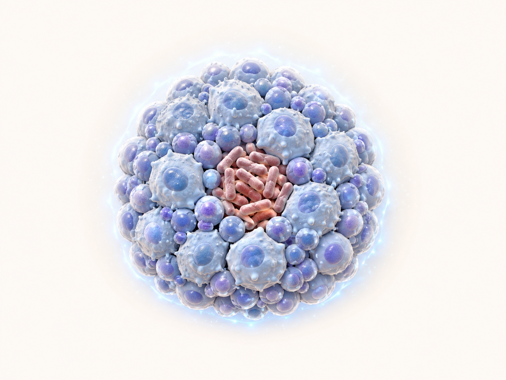

2년 전 vs 이번 결과 (TB Ag–Nil, IU/mL)
2년 전 (≈2024)
0.487
Positive · 기준선 위
이번 (2026.05)
0.302
Negative · 기준선 살짝 아래
변화량
−0.185
검사 변동 범위 안
이 변화의 의미 — 두 결과 모두 회색지대 안에 있습니다
측정값 위치 (TB Ag–Nil, IU/mL)
기준선 0.35
2년 전
0.487
0.487
이번
0.302
0.302
0
0.35cutoff
0.70
≥ 1.0
두 검사값은 모두 회색지대(0.35~0.70) 안에 있습니다. 이 구간에서는 같은 환자가 같은 날 두 번 검사해도 양·음이 바뀔 정도의 측정 변동성(약 13~30%)이 알려져 있어, 0.185 차이는 검사 자체의 변동으로 설명됩니다.

핵심 결론 — 여전히 잠복결핵(LTBI) 양성으로 관리합니다
음성이 결핵균이 사라졌다는 뜻은 아닙니다. 한 번 양성으로 확인된 잠복결핵은 추적 음성 한 번으로 진단을 철회하지 않습니다 — 대한결핵학회 4판(2020)·WHO 2024·CDC 모두 같은 입장.
앞으로의 관리 — 위험인자에 따라 결정
치료 권고: 면역억제제 시작 예정(TNF-α 억제제·항암·장기이식) · 최근 활동성 결핵 접촉력 · HIV 감염 · 흉부 X-ray 자연치유 결핵 병변 — 위 위험인자가 있으면 치료를 권고합니다.
개별 평가: 위험인자 없는 고령(>65세)은 약물 간독성과 발병 위험을 함께 평가합니다. 활동성 결핵 진행 위험은 시간이 지나며 낮아지는 경향입니다.
즉시 내원: 2주 이상 기침 · 발열 · 야간 식은땀 · 체중 감소 — 활동성 결핵 의심 증상.